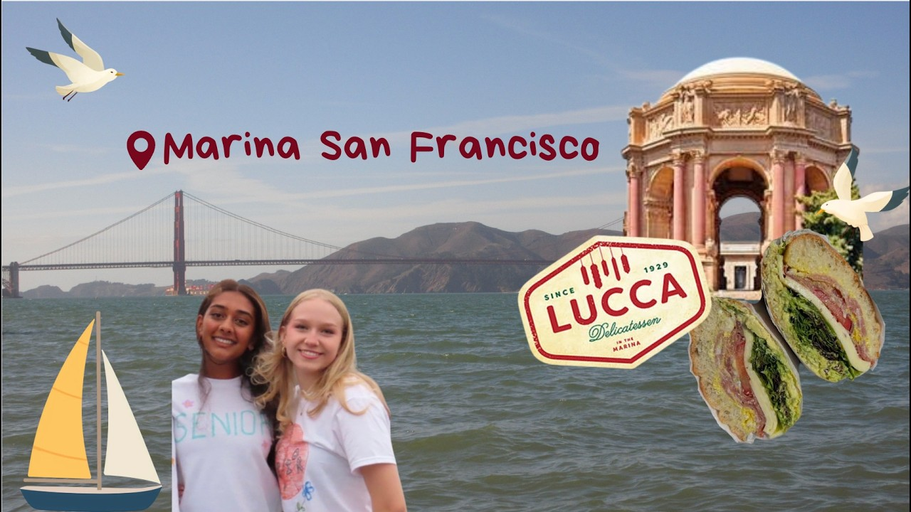

The Marina was built on marshland and landfill. It was laid out for the 1915 Panama-Pacific International Exposition, a world’s fair meant to present a “Jewel City” of architecture to visitors. The Palace of Fine Arts is the fair building that remains. The neighborhood was filled in with houses in the 1920s and 1930s, and that era still shows in the architecture.
Chestnut Street is the main shopping row. The Marina Green and the yacht harbor are the places people walk along the water. The Marina is one of the city’s younger residential neighborhoods, with many residents in their twenties and thirties, and it is known as a higher-income area.
Sources: San Francisco Heritage, Niche residents profile
The Marina’s food scene is known for coffee shops, bars, and newer restaurants, but several businesses go back much further. Lucca Delicatessen, at 2120 Chestnut Street, opened in 1929. Marina Supermarket, at 2323 Chestnut Street, opened in 1932.
Sources: San Francisco Heritage on legacy food spots, The Standard on Marina restaurants